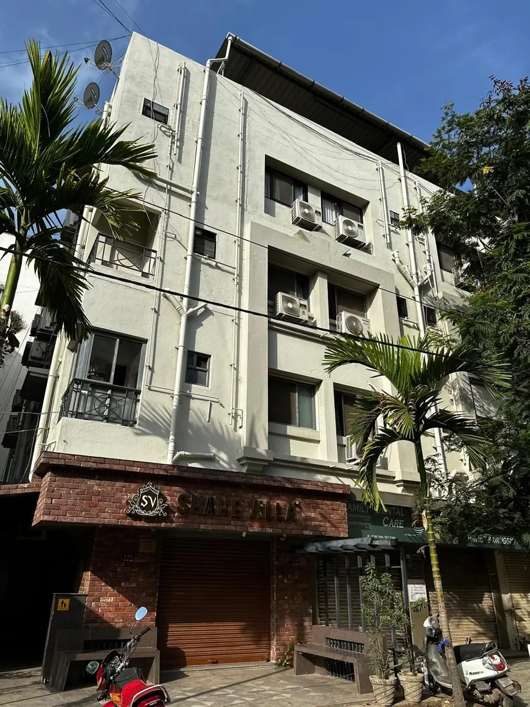

Vardhaman Hospital provides specialist women's and children's care at Ram Darshan, Halar Cross Road, Valsad, led by senior obstetrician & gynaecologist Dr. Usha L. Meisheri (M.D., D.G.O. — Mumbai).
Our team of experienced gynaecologists — supported by a general & laparoscopic surgeon with more than four decades of practice, and a dedicated pediatrician — provides complete care for women at every stage of life, from newborn girls to grandmothers, and for the newest members of your family.
The vision and mission that shape every decision we make for the mothers, daughters and families who trust us with their care.
To be a trusted centre for women's health in Valsad by providing clear clinical guidance, compassionate care and safe treatment at every stage of life.
To deliver complete obstetric, gynaecological, fertility and pediatric care — from safe deliveries and advanced laparoscopic surgery to newborn intensive care — with modern facilities, experienced specialists and round-the-clock emergency support.
Senior consultants working alongside our gynaecology team to deliver complete care for the whole family.

M.B.B.S., M.S.
Dr. Pradeep V. Mistry is a senior general and laparoscopic surgeon with 43 years of experience. He supports Vardhaman Hospital's surgical services with extensive operative experience and a steady clinical approach.
His role strengthens the hospital's operation theatre support for patients who need surgical assessment or laparoscopic care alongside gynaecological treatment.

M.B.B.S., M.D., D.C.H.
Dr. Piyush B. Patel is the consultant pediatrician for Vardhaman Hospital's newborn and pediatric care services, including NICU support, phototherapy, vaccination and child health consultations.
He works with the obstetric and gynaecology team so newborn care, pediatric review and family guidance stay connected from delivery onward.

M.D., D.G.O. (Mumbai)
Dr. Usha L. Meisheri leads the obstetrics and gynaecology services at Vardhaman Hospital. She completed her M.D. and D.G.O. in Mumbai and has served as an obstetrician and gynaecologist at the Kasturba Vaidhkiya Rahat Mandal Charitable Trust Hospital for three years.
Her practice covers the full spectrum of women's health — pregnancy care and deliveries, gynaecological surgery, family planning and preventive check-ups — with a patient-first approach that families across Valsad have come to trust.

M.D., D.G.O.
Dr. Kavita P. Tandel is an obstetrician and gynaecologist practising at Vardhaman Hospital. She has served at the Kasturba Vaidhkiya Rahat Mandal Charitable Trust Hospital for three years and consults through the full OPD week — mornings and evenings, Monday to Saturday.
She looks after antenatal care, deliveries, gynaecological treatment and family planning, and is a familiar, reassuring presence for our regular patients.

M.B., D.G.O.
Dr. Pradnya D. Kakade has been practising as an obstetrician and gynaecologist for the last 25 years. She consults at Vardhaman Hospital through the full OPD week and is available for emergencies round the clock.
Her long experience across deliveries, gynaecological surgery and women's health makes her a pillar of our round-the-clock emergency cover.
Meet our doctors in person, or book a consultation today. Reach us on WhatsApp or call us directly — we'll guide you through the next steps.